U varhan se jednotlivé hlasy zapínají příslušným ovládacím prvkem (manubriem, sklopkou). Jakákoliv změna registrace během hry tak znamená, že varhaník musí ručně vypnout již nepotřebné hlasy a naopak zapnout jejich novou sestavu. U větších varhan tato změna může předpokládat změnu polohy až několika desítek ovládacích prvků a je tedy nereálné ji provést v krátkém čase (během hry), což má vliv na interpretaci skladeb, jejichž tvůrci předpokládají častou změnu registrace. Řešení tu nabízí právě kolektivy či volná kombinace, které varhaníkovi umožní provést volbu hlasů předem a nahradit jimi právě používanou registraci stlačením jednoho tlačítka (někdy nožní šlapky, pistonu nebo sklopky). Především u větších varhan (s více rejstříky) jsou jedinou možností, jak během hry výrazně měnit barvu zvuku a dynamiku i bez pomoci registrátora nebo mu alespoň usnadnit práci (varhaník sám nemůže během hry manipulovat s větším množstvím ovládacích prvků registratury, jsou-li např. manubria rejstříků na bocích stolu, je to bez přerušení hry dokonce nemožné, pro registraci tak dříve byla potřeba další osoba - registrátor, u velkých varhan i dva registrátoři). Kolektivy i kombinace jsou součástí rejstříkové traktrury (nadřazeny ručním rejstříkům). Kolektivy, označované také někdy jako pevné kombinace či rejstříkové sbory, přepínají registraci celého nástroje v několika málo dynamicky odstupňovaných krocích (z řady pianissimo, piano, mezzoforte, forte, fortissimo, pleno a tutti - označují se většinou značkami pp, p, mf, f, ff, pleno, tutti). Rejstříky, použité v jednotlivých stupních jsou navoleny pevně při výrobě či intonaci nástroje varhanářem (u nástrojů s řídicím počítačem a elektrickou trakturou se dnes můžeme setkat i s možností dodatečné změny uživatelem) tak, aby jednotlivé dynamické stupně byly co nejvýrazněji odlišeny a umožňovaly rychlou změnu zvuku i technicky méně zdatným varhaníkům. Následující fotografie zachycují ovládací prvky kolektivů na hracím stole: 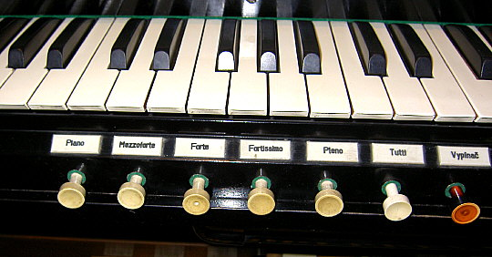 Tlačítka pod prvním manuálem, plný popis. 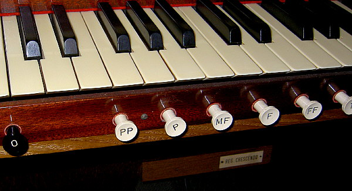 Tlačítka pod prvním manuálem, popis pomocí dynamických značek.
Volné kombinace jsou principiálně obdobné kolektivům, umožňují však rejstříkové obsazení jednotlivých stupňů kombinace individuálně navolit (naprogramovat). Volná kombinace je tedy varhaníkem předem připravená (naprogramovaná) sestava hlasů, která se v případě potřeby zapne jedním ovládacím prvkem (na rozdíl od kolektivů – pevných kombinací, u kterých jsou příslušné hlasy naprogramovány „napevno“ varhanářem při stavbě nástroje). |
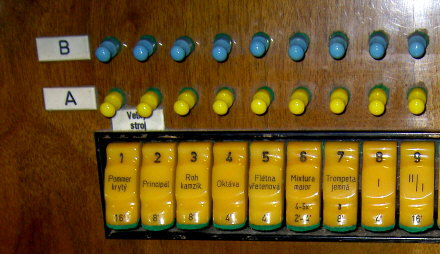 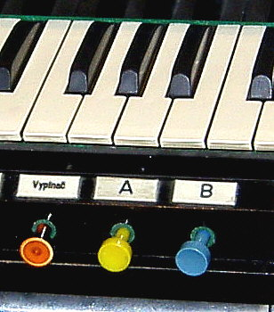
Tahélka volných kombinací A a B nad rejstříkovými sklopkami a tlačítka pro zapnutí kombinace pod prvním manuálem. Konstrukční řešení kolektivů a volných kombinací je závislé na typu traktury. U mechanické traktury se zpravidla stavělo jen omezené množství kolektivů (p - f - pleno), ovládané šlapkou (k pohybu traktury několika rejstříků současně je potřeba poměrně velká síla). Větší možnosti přinesla až pneumatická traktura (plná dynamická škála kolektivů a jedna až zpravidla čtyři volné kombinace) a elektrická či kombinovaná traktura (programovatelné kombinace v počtu desítek až stovek). Současné technické prostředky umožňují doplnit kolektivy a kombinace i do varhan s mechanickou trakturou (vznikne tak kombinovaná traktura) způsobem, který původní mechanické ovládání nemění (jedná se o doplňující možnost ovládání nadřazenou ručnímu, kterou lze vypnout a nástroj používat jen s čistě mechanickým ovládáním). Volné kombinace - pneumatická traktura: Abychom si objasnili princip volných kombinací, začneme
tím nejjednodušším případem – totiž ručním spínačem rejstříků s jednou
volnou kombinací. |
|
Na fotografii je zachycen fragment hracího stolu s rejstříkovými
sklopkami a jednou volnou kombinací, tvořenou páčkovými spínači nad sklopkami.
Sklopky, jak je patrné z obrázku, spínají jednotlivé hlasy či spojky klaviatur.
Abychom si objasnili, jak to funguje uvnitř, podívejme se nyní na řez
tímto hracím stolem: |
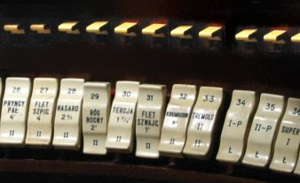 |
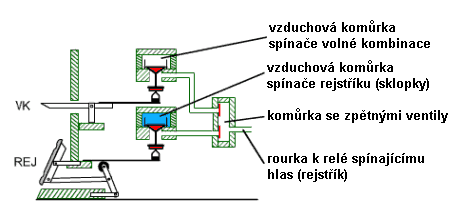
Každý ze spínačů (jak spínač rejstříku, tak i rejstříkový spínač kombinace) má oddělenou vzduchovou komůrku s řídicím ventilem. Komůrky jsou tvořeny podlouhlým kanálem, probíhajícím po celé délce hracího stolu (nad těmi částmi, ve kterých jsou ovladače rejstříků). Na obrázku jsou v řezu zobrazeny součásti pro jeden spínač rejstříku (sklopku) a jeden rejstříkový (programovací) spínač volné kombinace, všechny další mají identické provedení. Vzduchová komůrka spínače rejstříku je trvale naplněna stlačeným vzduchem. Překlopení sklopky tedy vždy způsobí okamžité naplnění připojené rourky a zapůsobení příslušného akčního členu na jejím konci (zapnutí rejstříku ve vzdušnici vpuštěním vzduchu do rejstříkové kancely či přesunutím zásuvky). |
|
Jak je patrné z obrázku, vzduch se k akčnímu členu
dostává od sestavy řídicích prvků registrace jedinou rourkou. K této rource
se ale v hracím stole může vzduch dostat od dvou nezávislých zdrojů (1.
- sklopka, 2. – rejstříkový spínač volné kombinace). V okamžiku, kdy pro
ovládání jednoho akčního členu použijeme více než jeden ovládací prvek
(v tomto příkladě dva, ale může jich být i více), musíme pneumatickou
soustavu doplnit o další člen – směrové (zpětné) ventily. Tyto ventily
oddělí jednotlivé zdroje tak, aby se navzájem nemohly ovlivňovat (dovolí
vzduchu téci jen od zdroje ke spotřebě a ne mezi zdroji navzájem viz animace).
|
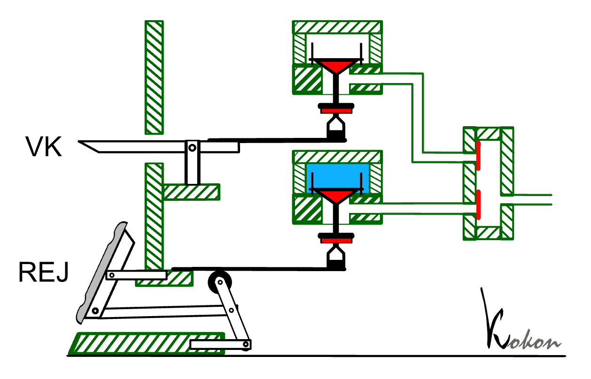 |
Vraťme se teď zpátky k popisu volné kombinace. Nad
vzduchovou komůrkou pro sklopky je obdobná kommůrka pro kombinace. V klidovém
stavu není naplněna stlačeným vzduchem, takže ani při zapnutém rejstříkovém
spínači kombinace, tj. otevřeném ventilu k hornímu konduktu na obrázku
nezapne hlas – nevpustí vzduch do rourky k akčnímu členu. To se stane
až v okamžiku, kdy se do této komory odděleným ventilem, spojeným s centrálním
spínačem kombinace, vpustí vzduch. V tomto okamžiku se současně zapnou
všechny rejstříky, naprogramované předem stlačením páček jednotlivých
spínačů kombinace nad sklopkami. |
Tato animace ukazuje, co
se děje v okamžiku sepnutí volné kombinace tlačítkem na hracím stole.
Stlačený vzduch naplní komoru ventilů rejstříkových (programovacích) spínačů
volné kombinace. V tomto případě je spínač vypnutý, ventil je uzavřen
a vzduch se tak dále nedostane. Tento hlas byl tedy naprogramován do kombinace
jako vypnutý a jeho stav se zapnutím kombinace nemění (i to je smysl kombinace). |
Na této animaci je obdobná
situace pro rejstřík, který byl do kombinace zaprogramován jako zapnutý.
Páčka spínače je stlačená, ventil v komůrce kombinace otevřený a v okamžiku,
kdy se do ní dostane stlačený vzduch tento volně plyne přes zpětný ventil
k akčnímu členu (zapne rejstřík). Z animace je patrná i role sběrné komůrky
se zpětnými ventily, vzduch od kombinace může plynout jen ve směru ke
spotřebiči, nedostane se do jiné rourky (ke sklopce, kudy by unikl do
okolí). |
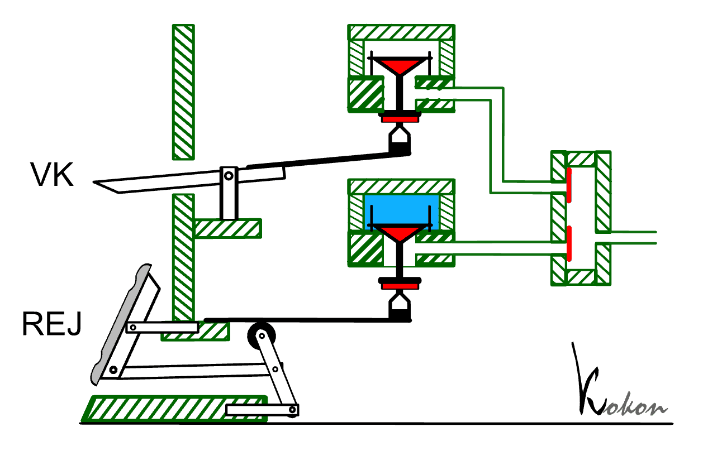 |
Porovnáme-li způsob práce dvou (v tomto příkladě)
možností, jak zapnout hlas, vidíme, že je prakticky shodný s jedním rozdílem
– vzduchová komora řídicích ventilů spínačů rejstříků (sklopek) je stále
pod tlakem, zatímco komora ventilů rejstříkových spínačů volné kombinace
dostane vzduch až po otevření dalšího, centrálního ventilu. Teoreticky
vzato – kdybychom tento centrální ventil nechali trvale otevřený, bylo
by ovládání rejstříku sklopkou a páčkou kombinace rovnocenné (i když –
s ohledem na rozměry páček a jejich provedení dost neohrabané a nevýhodné,
protože k takovému způsobu ovládání nejsou předurčeny). V běžném případě
se tedy liší použití obou prvků. Sklopka zapíná hlas okamžitě, kdežto
rejstříkový spínač kombinace musí čekat pro splnění své naprogramované
funkce až na nadřízený povel. Prohlédneme-li si výše uvedené obrázky a animace, narazíme ještě na další problém. Je-li v nástroji vybudováno více volných kombinací (nebo jsou ještě dále spojeny s pevnými kombinacemi – kolektivy), jejich konstrukce je vždy postavena tak, že se při zapnutí kterékoliv z nich ostatní automaticky vypnou. Jinými slovy, v jednom okamžiku může být zapnuta jen jedna kombinace (jen jeden kanál dostane vzduch, jeho přívod do ostatních se automaticky uzavře). Problém ale v tuto chvíli nastává s rejstříky, které byly zapnuty ručně (sklopkou). Ty nelze jednoduše vypnout (vzduchová komora jejich ventilů je pod tlakem trvale) a tyto ruční hlasy mohou dále znít navíc k předem navolené kombinaci a znehodnotit ji tak. |
| 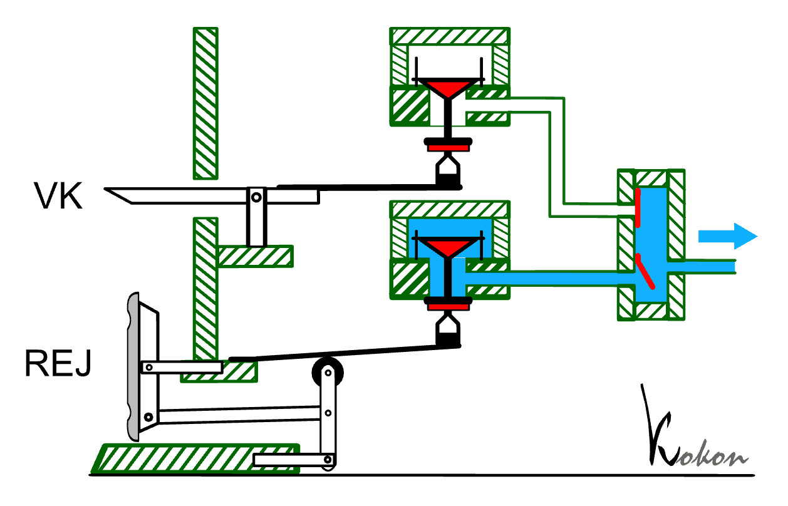 | Animace ukazuje právě takový
okamžik – rejstřík je zapnut ručně sklopkou, naopak ventil v komůrce kombinace
je ve spodní – vypnuté poloze. Přesto hlas zůstává zapnut bez ohledu na
centrální zapnutí či vypnutí kombinace i když je naprogramován jako vypnutý. |
Řešení se v tomto případě nabízí– upravit vzduchovou komoru pro sklopky tak, aby se v okamžiku zapnutí kterékoliv kombinace automaticky uzavřel přívod vzduchu a „ruční“ rejstříky se vypnuly. Nebo přidat k tomuto ventilu ovládací prvek, označený zpravidla jako „ruční rejstříky“ (R nebo RR), kterým mohu volit pro volné kombinace dva odlišné způsoby činnosti: Při zapnutých ručních rejstřících volná kombinace jen přidává další hlasy, nedokáže již nepotřebné vypnout. A naopak při vypnutých ručních rejstřících zapnutí volné kombinace způsobí úplnou výměnu sestavy rejstříků (vypne všechny ruční a přepne na naprogramované v kombinaci). V některých nástrojích je spínač, pracující na opačném principu – zapíná ke kombinacím ruční rejstříky. Bývá zpravidla označen jako „vypínač ručních rejstříků“ a buďto zapne nebo vypne všechny ruční rejstříky (ovládá opět ventil pro naplňování komory pro sklopky vzduchem) bez další vazby na kolektivy a kombinace. Ve velkých varhanách se zpravidla setkáme s oběmi možnostmi.
|
|
Fotografie ukazuje fragment hracího stolu se čtyřmi zabudovanými volnými kombinacemi (konkrétně na této fotografii jsou sice varhany s elektropneumatickou trakturou, způsob ovládání a vnější vzhled jsou ale prakticky shodné s čistě pneumatickým nástrojem). Nad sklopkou každého rejstříku jsou vidět různobarevná tahélka rejstříkových spínačů volných kombinací. Sestava všech tahélek shodné barvy (tady bílé, červené, žluté a modré) slouží k naprogramování rejstříků do jedné ze čtyř dostupných kombinací. Čtveřic tahélek je tolik, kolik je sklopek ručních rejstříků (včetně spojek). Následující schéma ukazuje řez registračním blokem jednoho rejstříku v pneumatickém nástroji s více (na obrázku se třemi) kombinacemi: |
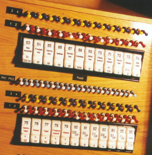 |
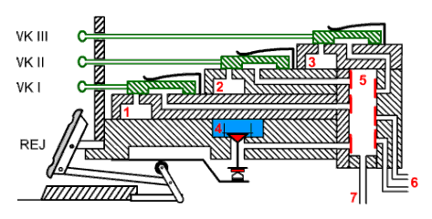
Tahélka volných kombinací (VK I, VK II a VK III –
na obrázku všechna v barvě zelené) jsou spojena s trojicí přesuvných ventilů
ve stole. S jejich pomocí lze sestavit – naprogramovat tři různé sestavy
– volné kombinace hlasů v každém manuálu a v pedálu. Každá z těchto kombinací
může být sepnuta varhaníkem pomocí tlačítek (K1, K2, K3), umístěných zpravidla
pod prvním manuálem, nebo jako pistony nad prahem pedálu. Každou z těchto
kombinací lze zapnout jen samostatně, mechanismus ovládání tlačítek je
řešen tak, že při stisku tlačítka kterékoliv kombinace se zbývající kombinace
vypnou, nelze stisknout dvě či více současně. Každá z (v tomto příkladě
tří) kombinací má v hracím stole svou vzduchovou komůrku (1,2,3), probíhající
jako kanál po celé délce stolu (nade všemi sklopkami). Po stisku ovládacích
tlačítek kombinace se vždy jedna odpovídající komora naplní vzduchem.
Komora, označená na obrázku 4 je komora pro ruční rejstříky – sklopky
a je stále naplněna vzduchem. Překlopení sklopky tak způsobí vždy okamžité
zapnutí hlasu. |
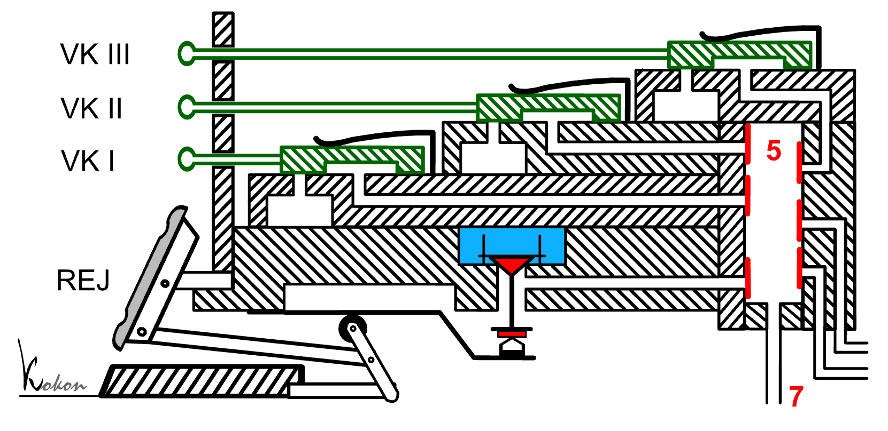
Obdobně jako u výše uvedeného příkladu s jednou kombinací
i tady najdeme sběrnou komůrku (5) se zpětnými ventily. Všechny rourky,
přivedené k této komůrce mají ústí opatřeno ventilem, který zabraňuje
zpětnému toku vzduchu. Pouze vtokový otvor výstupní rourky (7) je volný
a umožňuje výstup vzduchu dále k akčnímu členu.
Na obrázcích je vždy jen řez blokem pro jeden rejstřík, abychom si lépe uvědomili, které části jsou společné pro všechny rejstříky a které patří jen jednomu, je na následující animaci ukázán postupný řez několika vedle sebe ležícími částmi hracího stolu: |
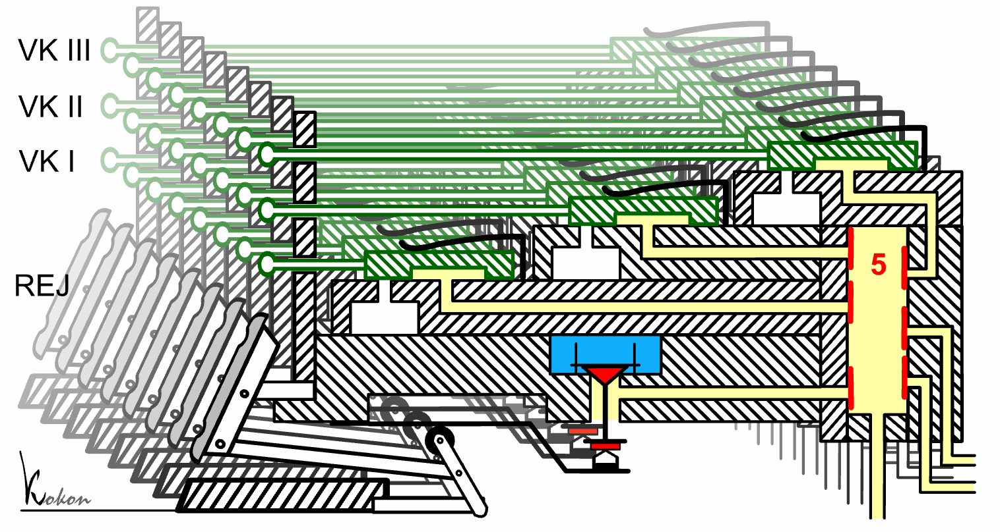
Vzduchové komůrky jednotlivých volných kombinací
(zvýrazněné na animaci červenými obrysy) probíhají v hracím stole podélně
a představují zdroj vzduchu pro všechny rejstříkové spínače příslušné
volné kombinace. Na jejich horní straně jsou otvory, kterými se může tento
vzduch dostat kanálky až do sběrné komůrky se zpětnými ventily (5) pro
jednotlivé rejstříky. Tyto otvory jsou otevírány a zavírány pomocí přesuvných
ventilů spojených s tahélky rejstříkových spínačů volné kombinace VK I,
VK II, VK III. Vzduchová komora kombinace je tedy společná pro všechny
rejstříkové spínače této kombinace. Zbývající kanálky vedou jen do příslušné
sběrné komůrky (5) se zpětnými ventily. Tuto komůrku má každý rejstřík
svou a mezi sousedními komůrkami ve stole už není další podélné spojení. |
Zasunutí všech tahélek příslušného
hlasu způsobí jeho vypnutí ve všech kombinacích. Zapnutí kterékoliv kombinace
pak nezpůsobí zapnutí hlasu, poněvadž přesuvné ventily tahélek zabraňují
v této poloze proniknutí vzduchu z kanálu kombinace do sběrné komůrky
a dále k akčnímu členu. Co se děje v tomto bloku v případě, že je hlas
v některé z kombinací naprogramován jako zapnutý? |
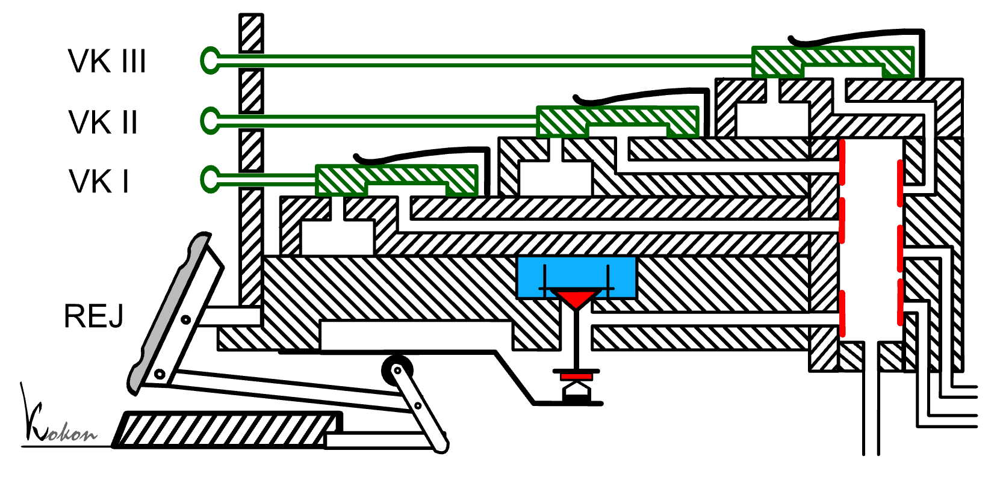 |
Vytažením spodních dvou tahélek VK I a VK II je tento rejstřík zaprogramován do prvních dvou kombinací jako zapnutý a do třetí (VK III) jako vypnutý. Centrální zapnutí první či druhé kombinace (odpovídajícím prvkem na hracím stole) způsobí naplnění jedné ze vzduchových komor stlačeným vzduchem. Kanálkem v bločku ventilu s vysunutým tahélkem se tento vzduch dostane až do sběrné komůrky (5) se zpětnými ventily a odsud dále k akčnímu členu ve vzdušnici a zapne rejstřík. U třetí kombinace se sice kanál naplní také (viz animace), vzduch však narazí na uzavřený kanálek pod bločkem se zasunutým tahélkem a nedostane se dále, rejstřík zůstane vypnutý.
Na obrázcích je ještě jeden dosud nepopsaný prvek – rourky vedoucí do sběrné komůrky, označené číslem 6. Jsou opatřeny zpětnými ventily, které umožňují proudění vzduchu pouze z rourky do komůrky. Přivádějí vzduch od dalších řídicích prvků, např. dalších volných kombinací, situovaných např. na boku hracího stolu, od pevných kombinací (kolektivů – např. piano, forte, pleno…), zařízení pro crescendo, pedálové automatiky a podobně. U malých nástrojů mohou zcela chybět, naopak u velkých jich může být i více… Sběrná komůrka (5) se zpětnými ventily tvoří velmi důležitý prvek registračního bloku a je individuální pro každý hlas. Jen díky tomuto zařízení může správně pracovat ovládání každého jediného hlasu více cestami (sklopkou, kombinací, kolektivem, crescendem…). Každý rejstřík má tuto komůrku svou, z toho vyplývá, že v hracím stole je tolik komůrek, kolik je ve varhanách rejstříků (hlasů + spojek). Konstrukčně jsou tyto komůrky řešeny jako jeden blok – skříňka (následující animace): |
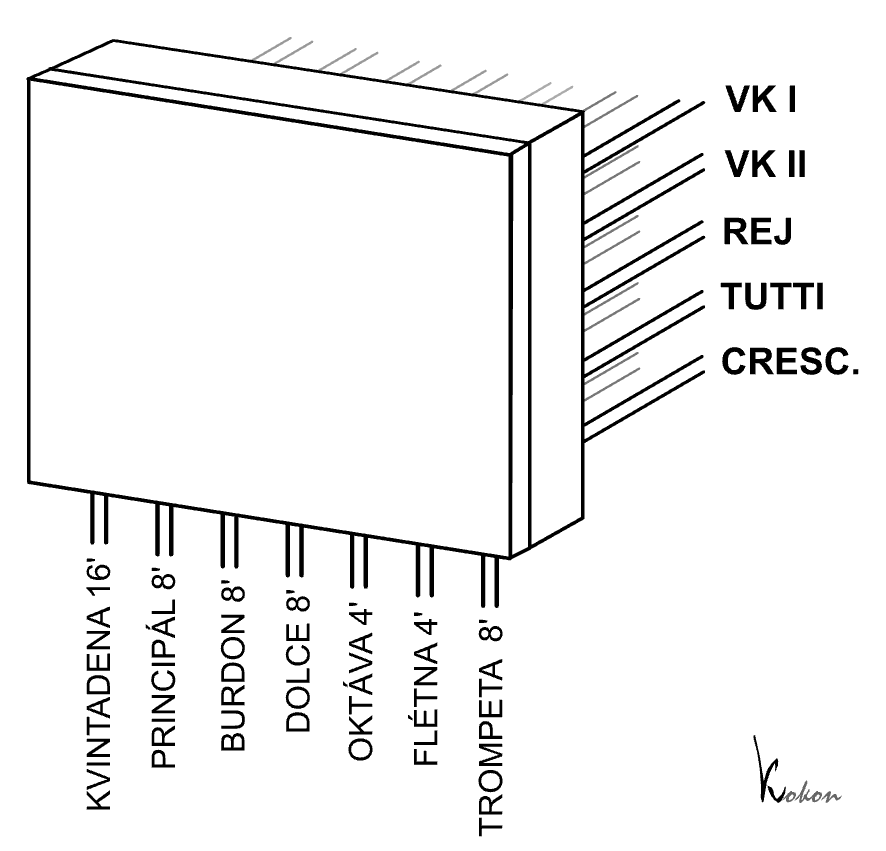
Sejmeme-li z této skříňky víko, uvidíme uvnitř systém
svislých kanálků – navzájem oddělených komor se zpětnými ventily (zpravidla
koženými klapkami). Do každého kanálu vede sada rourek (v tomto případě
pěti), kterými může být přiveden vzduch od řídicích prvků, kterými jsou
zde (shora) volná kombinace I, volná kombinace II, rejstříková sklopka,
kolektiv Tutti a mechanismus Crescenda. Každý z těchto přívodů do komůrky
je opatřen zpětným ventilem, takže se navzájem nemohou ovlivňovat. Ve
spodní části komůrky je vtokový otvor rouky, vedoucí k akčnímu členu (zapínající
hlas či spojku). Animace ukazuje zapnutí vybraného hlasu (tady Trompeta
8’) pomocí zapnutí volné kombinace VK I. Vzduch z příslušné rourky pootevře
zpětný ventil, naplní komůrku a pokračuje rourkou k akčnímu členu. Současně
přitiskne klapky všech zbývajících zpětných ventilů, čímž zabrání úniku
vzduchu přes tyto, nyní neaktivní rourky (a případné vzájemné ovlivnění
nadřazených členů – pokud by zde tyto ventily nebyly, stlačený vzduchy
by se např. přes otevřené ventily kombinací mohl dostat do vzduchového
kanálu druhé kombinace a zapnout další hlasy). Analogicky zařízení funguje
i pro ostatní ovládací prvky, kterých u konkrétních varhan může být více
i méně, než v tomto příkladu. |
Volné kombinace - elektrická a kombinovaná traktura:Činnost i ovládání volných kombinací jsou u elektrické traktury obdobné, jako u pneumatické. Snazší realizace ovládacích prvků a především vlastní "logiky" přiřazení dané funkce konkrétnímu ovládači jsou však podstatně snazší, technicky jednodušší a realizovatelné na mnohem menším prostoru. Proto nástroje s elektrickou (elektronickou) trakturou nabízejí více volných kombinací (dnes často desítky až stovky, pro přehlednost dělené do "bank" - sad, kterou může mít každý z varhaníků vlastní). Logiku kombinací lze realizovat kontaktně (pomocí elektromechanických relé - viz kapitola o komponentech elektrické traktury a kapitola o rejstříkové elektrické traktuře), bezkontaktně pomocí tranzistorů a diod nebo softwarově, pomocí programu v řídicím počítači.
|
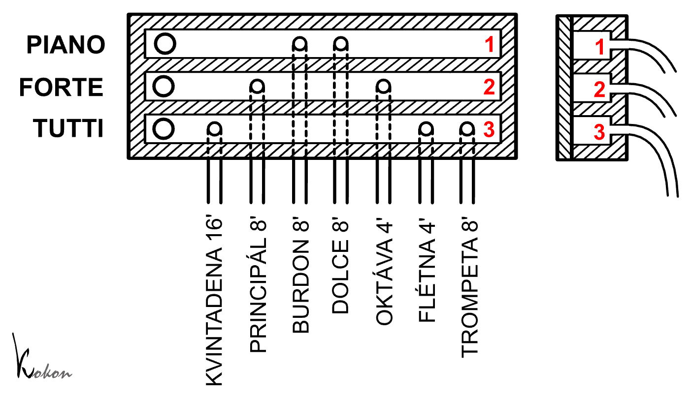
Zařízení je tvořeno dřevěnou skříňkou s trojicí (v
tomto příkladě pro tři stupně síly zvuku nástroje) vodorovných kanálů
1,2 a 3. Vlevo je u každého kanálu vstupní otvor, kterým se do kanálu
dostane vzduch po zvolení – zapnutí příslušného kolektivu. Dále jsou v
každém z kanálků výstupní otvory s rourkami k registračnímu bloku (zde
jsou přivedeny do sběrné komůrky a odtud se vzduch dostane přímo k akčním
členům). Zapnutí kolektivu Piano naplní vzduchem horní kanálek a přes odsud vyvedené rourky zapne tiché rejstříky Bourdon 8’ a Dolce 8’. Zapnutí kolektivu Forte naplní oba horní kanálky, což v důsledku přidá k předchozím rejstříkům Principál 8’ a Oktávu 4’. Zapnutí Tutti pak naplní vzduchem i třetí kanálek a způsobí zapnutí všech rejstříků. (Jedná se o zjednodušený příklad, u běžných varhan je rejstříků více a kolektivy tak mohou být značně bohatší). |
V hracích stolech řízených počítačem je realizace kolektivů softwarovou záležitostí (úpravou programu). Pro ovládání je použit kontaktní či bezkontaktní prvek, přiřazení rejstříků příslušnému stupni je naprogramováno v programu (u většiny systémů je dána možnost uživateli sestavu rejstříků změnit, což v ostatních typech traktur není možné). Je otázkou do diskuse, nakolik je tato možnost účelná (varhanáři ji však většinou nabízejí, neboť je prakticky "zadarmo" a pro zákazníka efektně zvyšuje možnosti nástroje a pocit jeho vlivu na jeho zvuk). |
Zatím rozpracováno, poslední
úpravy 9.10.2006.... |
Poznámka: Tato stránka je součástí Anatomie varhan ®, © Ing. Petr Bernat. Animace © Konrad Zacharski